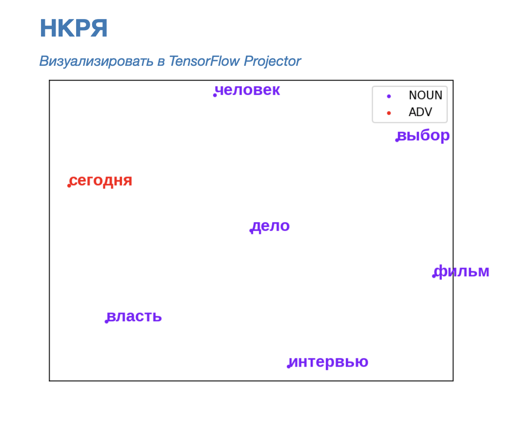
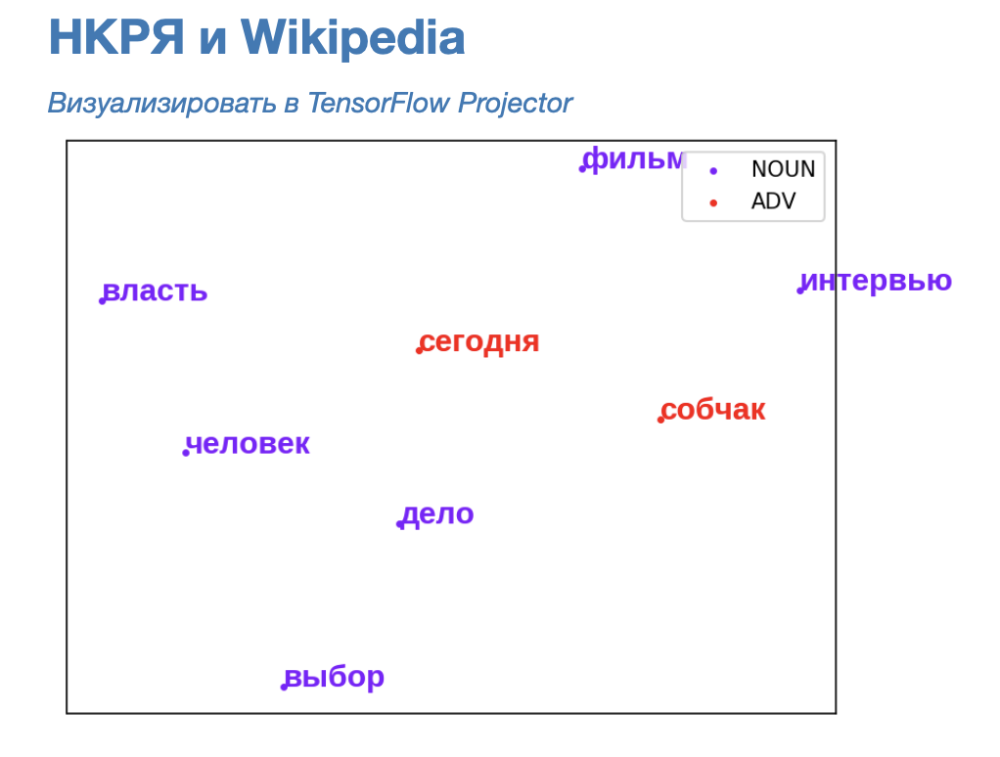
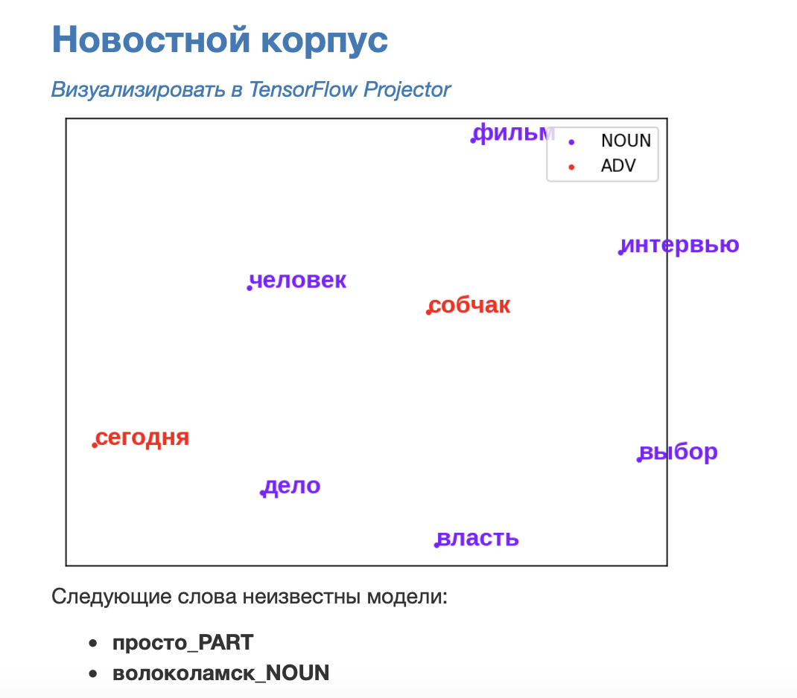
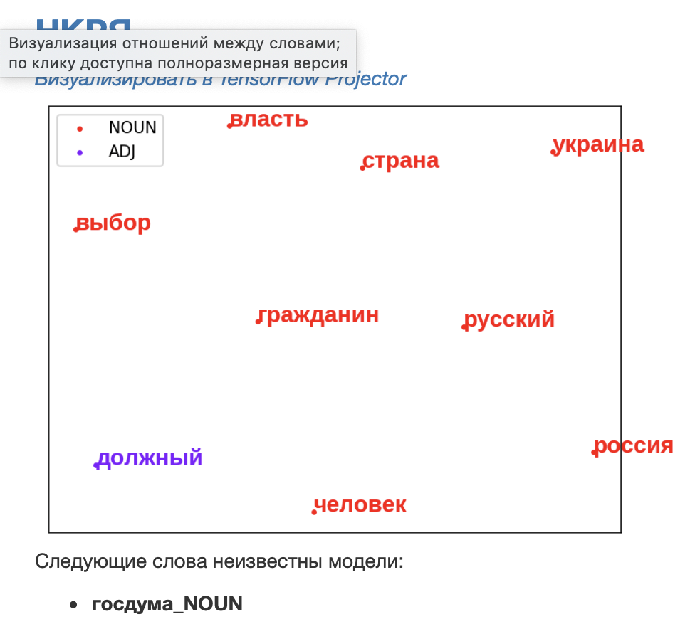
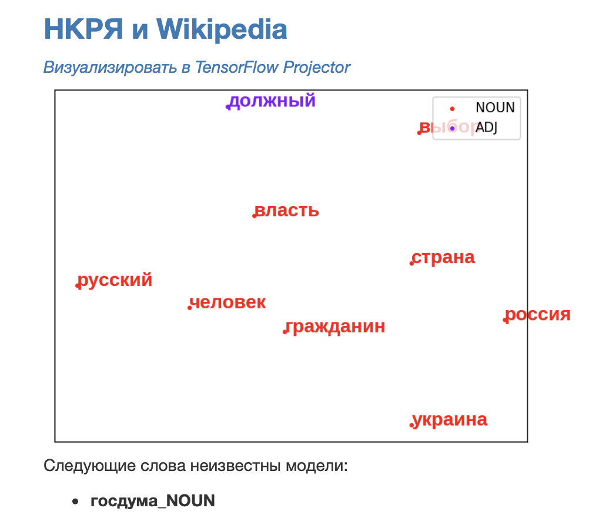
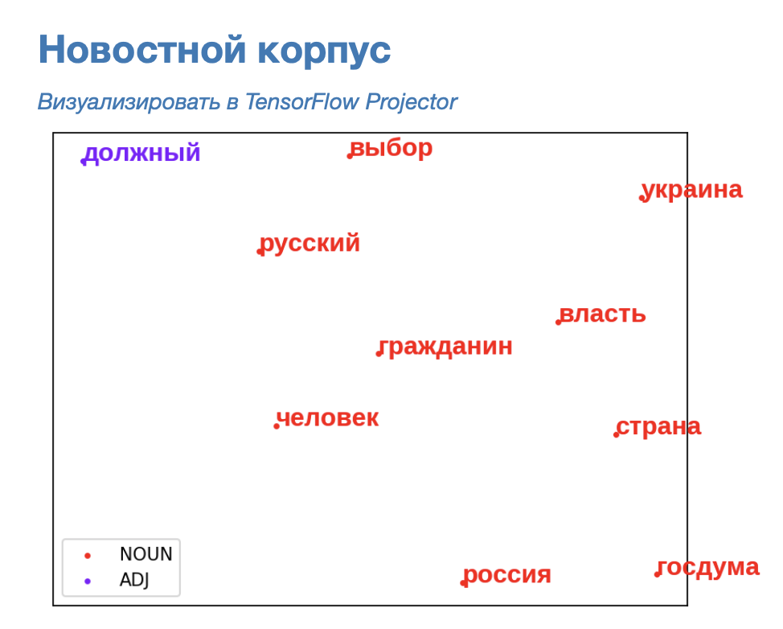

Рассмотрев одинаковый массив текстов, определить темы, затрагиваемые в твиттерах двух политиков.
Мы использовали три программы:
- AntConc
- Mystem
- RusVectores
Список самых частых слов:
Собчак:
Фильм(15)
Человек(13)
Выбор(11)
Просто(10)
Сегодня(9)
Собчак(9)
Власть(8)
Волоколамск(8)
Дело(8)
Интервью(7)
Жириновский:
Россия(96)
Человек(74)
Русский(66)
Страна(66)
Украина(58)
Госдума(38)
Власть(34)
Должный(34)
Выбор(32)
Гражданин(26)
Твиты Собчак, пробитые в AntConc:


Твиты Жириновского, пробитые в AntConc:


Загружаем самые частотные слова из твитов Собчак в RusVectores:



Получаем:
НКРЯ

НКРЯ и Википедия

Новостной корпус

Загружаем самые частотные слова из твитов Жириновского в RusVectores:



Получаем:
НКРЯ

НКРЯ и Википедия

Новостной корпус